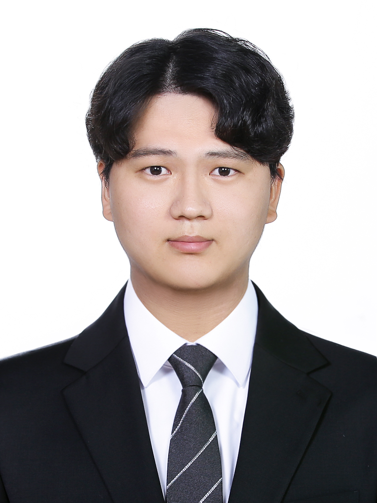
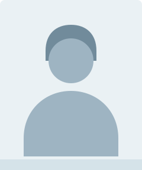
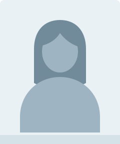

안치우
컴퓨터공학과 3학년
1기 랩장
- 기술 스택
- Python
- Java
- C
- C++
- JavaScript
- HTML
- CSS
- React
- Vite
- Flutter
- Firebase
- Git
- 관심 분야
- 중등 정보교육
- 프로그래밍·컴퓨팅 사고력 교육
- 프로젝트 기반 SW 교육
- 웹·앱 개발
- AI·디지털 교육 도구 활용
OUR PEOPLE
각자의 관심과 경험을 나누며 함께 연구합니다.
다른 이름이나 기술로 검색해 보세요.
CURRENT MEMBERS
컴퓨터공학과 3학년

컴퓨터공학과 4학년

컴퓨터공학과 3학년

컴퓨터공학과 3학년

컴퓨터공학과 3학년

컴퓨터공학과 2학년
컴퓨터공학과 2학년
ALUMNI

2026 졸업
